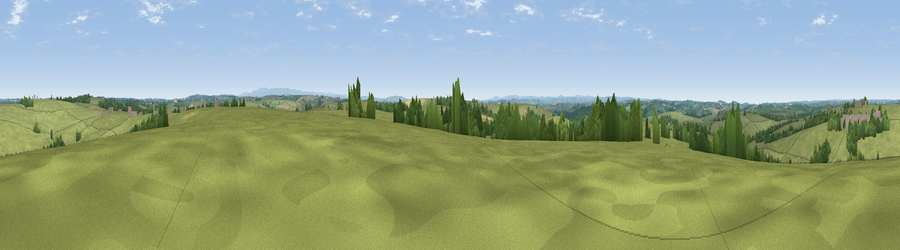

Viewpoint near Chapmans Well
#27113 in England · top 59% of its area beats it · near Chapmans Well · path 212 mWhere it is
The exact computed spot (SX 35575 95675). Click the marker for map links.
Public access: the nearest public right of way is about 212 m away — the final stretch may cross private land. Computed from Natural England's CRoW access layer and OpenStreetMap rights of way — not the legal definitive map. Always verify locally.
The view, rendered

A 360° render of this exact spot computed from the terrain model, tree cover and land cover — summer colours, afternoon light, calibrated against photographs of famous viewpoints. Real trees, hedges and buildings will differ in detail.
The panorama
Grey silhouette: terrain skyline in each direction (720 bearings, Earth curvature and refraction included). Dashed green: skyline with trees (+15 m) and buildings (+8 m) as obstacles. Blue strip: how far the ground is visible on each bearing.
Where the view opens
Wedge length = distance to the farthest visible ground on that bearing (vegetation-aware). Rings at 10, 25 and 50 km.
What fills the view
81% grassland · 9% woodland · 8% cropland · 1% built-up
Angular shares of the visible panorama (visual magnitude), not map area. Landscape diversity 0.28 (0–1 Shannon).
Key numbers
More beautiful places nearby
The staircase of upgrades: each row has a higher view potential than everything closer. Driving times are estimates from straight-line distance, calibrated against real road routing — check an actual route before setting out.
| Place | Direction | Drive | Score |
|---|---|---|---|
| Viewpoint near Chapmans Well | SSW · 2 km | ~5 min | 46.1 |
| Viewpoint near Chapmans Well | S · 3 km | ~7 min | 57.4 |
| Viewpoint near Hollacombe | NNE · 8 km | ~17 min | 60.3 |
| Viewpoint near Whitstone | WNW · 10 km | ~19 min | 65.1 |
| Viewpoint near Whitstone | WNW · 10 km | ~19 min | 69.4 |
| Viewpoint near Warbstow | WSW · 16 km | ~29 min | 71.2 |
| Viewpoint near Poundstock | WNW · 17 km | ~30 min | 76.0 |
| Viewpoint near Poundstock | W · 18 km | ~31 min | 79.7 |
50.73735, -4.33154 · source: screening · position refined by local search. Computed location — check access rights before visiting.